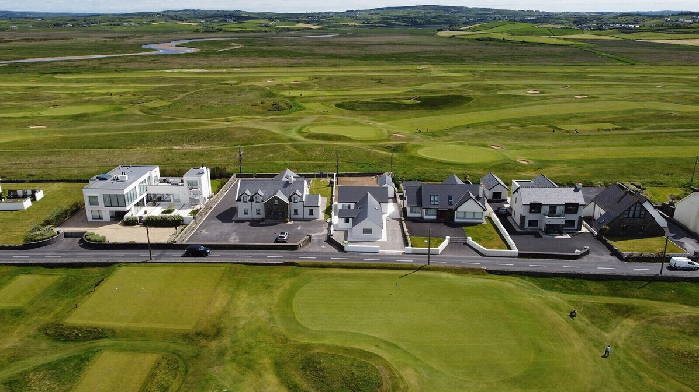
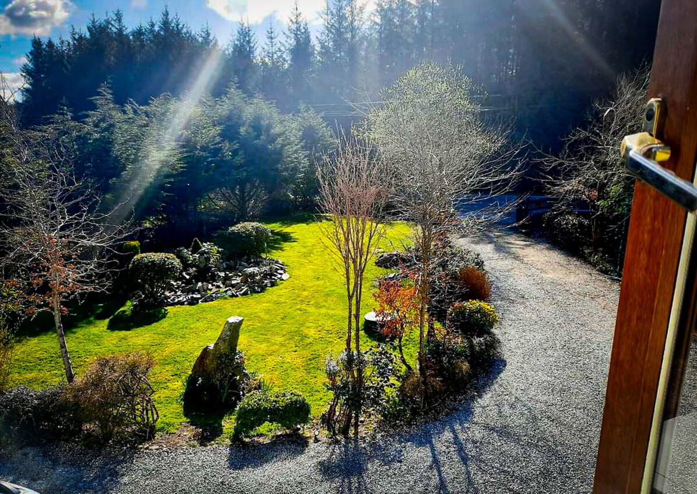

About 4 hours driving; allow 5½–6 hours for loading, lunch and breaks.
10 travelers · 9 nights · 3 memorable bases
Three corners of Ireland. One family adventure.
Dublin streets, Killarney’s lakes and the wild Atlantic coast—with enough flexibility for each vehicle to follow a different kind of day.
May 31 depart DFWJune 1–10 in Ireland2 vehicles confirmed


 Dublin → Killarney → LahinchThe July selected · Clayton booked
Dublin → Killarney → LahinchThe July selected · Clayton booked
Start with the shape of the trip
Dublin → Killarney → Lahinch → Dublin.
Four stays take us from central Dublin to Kerry and Clare, then back to an airport hotel for the final night. The map shows where the stays sit and the realistic time each transfer will take with ten people, luggage, meals and breaks.
Loading the route map…
Roughly 3 hours direct; allow 4–5 hours with loading, lunch and breaks.
About 3 hours to Dublin; allow extra time for group stops, the 4 PM Baggot Street rental returns and the transfer to Clayton Hotel Dublin Airport.
AA 132 · DFW May 31 at 7:00 PMNonstop overnightArrive Dublin June 1 at 9:45 AM9 nightsAA 133 · Dublin June 10 at 11:45 AM
- 1The July – Capel StreetJune 1–32 nights · selected, booking unconfirmed · William covering
- 2Knockmanagh Holiday HomeJune 3–63 nights · booked
- 3Lahinch golf homeJune 6–93 nights · booked
- 4Clayton Hotel Dublin AirportJune 9–101 night · booked by Laney, Laney covering · check-in 2 PM / checkout 11 AM
One base at a time
See where we stay, how the rooms can work and what sounds fun nearby.
Each chapter keeps the lodging, suggested room assignments, photos, driving commitment, activities and meal ideas together. The two homes have working room plans. Dublin room types and guest allocations remain unverified.
Your personal or household total
Turn the ideas above into a practical trip budget.
Choose how many people you are paying for and your food style. Every activity marked “Plan it” is included automatically.
House breakfasts, sightseeing lunches, five or six cooked dinners and two nicer meals.
Several meals cooked at the houses, casual meals, two nicer dinners, snacks and a modest cushion.
More meals out, desserts and café stops. Alcohol and personal shopping remain separate.
Fuel, food and attractions are paid as we go. This personal calculator spreads the two SUVs and two confirmed homes across all 10 travelers as a planning estimate; the prior seven-adult home split below is a provisional comparison, not a payment request. Dublin lodging prices, fuel, extra mileage, tolls and Ireland parking are excluded from this calculator. William covers The July and Laney covers Clayton; actual prices are still needed. Activity costs apply to every traveler selected here, so adjust the traveler count if only part of your household will do an activity such as golf.
The practical part, after the trip ideas
What is booked, who is covering it and what still needs confirmation.
William is covering The July arrival stay; Laney booked and is covering the Clayton final night. Both prices remain unknown. Booked status does not establish paid status. Lodging update: October 12, 2026; other estimates retain their earlier basis.
Euro conversions use the European Central Bank reference rate for August 20, 2026: €1 = $1.1681. Card-network exchange rates can differ.
Prior home-only split · provisional
How the two home reservations compare under the earlier split.
The two homes have a combined reservation value of $4,231.68. The earlier seven-adult model gives about $604.53 per adult. This comparison tracks assigned reservation value; it does not show cash paid, reimbursements or a final amount owed. Both Dublin stays are outside this table until their costs and treatment are confirmed.
The complete financial picture
Our starting point was $3,200 per traveler: 10 people × $3,200 = $32,000.
This projection combines known reservation values and airfare estimates with planning allowances. The $2,700 Dublin placeholder covers both hotel stays once and will be replaced by their actual prices. It is not money already spent.